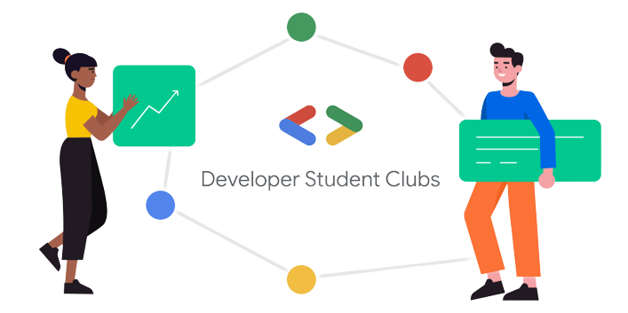

The Google Developer Student Clubs (GDSC) program is a community-driven initiative by Google that aims to provide university students with opportunities to learn, collaborate, and build projects using Google technologies. GDSCs provide an inclusive and supportive environment for students to learn, grow, and contribute to the technology field. It's a way for students to bridge the gap between classroom learning and practical application while being part of a global community of aspiring developers.

Goals of GDSC
Skill Development
GDSC aims to provide students with hands-on experience and practical skills in areas like software development, cloud computing, machine learning, web development, and more. Workshops, coding sessions, and collaborative projects are often organized to help students build technical expertise.
Learning Opportunities
GDSC offers students a platform to learn from industry experts, Google Developers, and other professionals through workshops, seminars, hackathons, and guest lectures. This exposure helps students stay updated with the latest trends and technologies in the tech industry.
Community Building
GDSC fosters a sense of community among students who share a passion for technology. It provides a space for networking, collaboration, and knowledge sharing, allowing students to connect with like-minded peers and potential mentors.
Contribution to Open Source
GDSC promotes open-source contributions by encouraging students to work on open-source projects and contribute to the global developer community. This not only benefits the student's skill development but also contributes to the broader technology ecosystem.
Innovation and Creativity
GDSC encourages students to explore innovative ideas and work on projects that address real-world problems using technology. This can involve coding challenges, hackathons, and projects that have a positive impact on society.
Personal Growth
Beyond technical skills, GDSC supports students in developing soft skills such as communication, teamwork, leadership, and project management. These skills are essential for a well-rounded professional in any field.